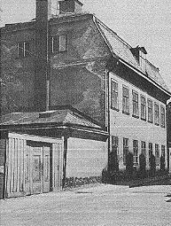
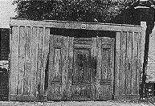
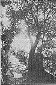
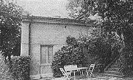
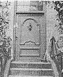

|
Malmgårdarna i Stockholm, Lindberg, 1985
 Här uppe på den blivande Schinkelska malmgårdstomten fanns år 1730 ett avbränt stenhus, som tillhört Sven Carlsten. Brann hans hus månne ner i samband med den stora Katarina- branden år 1723? 1738 byggde Johan In de Betou ett envånings stenhus, som sannolikt motsvarar bottenvåningen i den nuvarande gården. 1783 lämnar han en försäkringsbeskrivning på sin malmgård på 3 060 kvadratalnar (ca 1070 m2). Man ser tydligt framför sig hur alltsammans var byggt på berget. Sandstenstrappor med järnledstänger går från den ena avsatsen till den andra. Också ett tvåvånings lusthus, som har ingångar till båda våningarna finns beskrivet. Nere vid sjön har han saltbodar. Han bedriver alltså affärsverksamhet men är dessutom politieborgmästare. Åren 1760-62 är han invald i riksdagen och 1758 rådman och ledamot av Justitiekollegium. Näste ägare som lämnat synliga minnen efter sig, är David Schinkel, som gett egendomen dess namn. Han var född i Stralsund år 1743 och kom till Stockholm endast 16 år gammal. Han skapade sig snabbt ett namn inom den stockholmska affärsvärlden och fick redan på 1770-talet överta ett stort handelshus, som han fortsatte att driva med stor framgång. Han blev kommerseråd och 1790 adlades han men behöll namnet Schinkel. De stora framgångarna gjorde att han kunde köpa malmgården på Katarina Östra Kyrkogata, som Fjällgatan då hette.
|
. |
1794 ansökte han om byggnadstillstånd och byggde på
huset med en våning och lät inreda vinden. Entré ordnades
både från gatan och från gården och däremellan en portgång.
Även om en del om- och tillbyggnader förekommit senare är det
Schinkels hus som vi fortfarande ser. Gatuentrén försvann dock
på 1920-talet och ersattes av ett fönster, men gårdsentrén är den
ursprungliga.
 Anna Lindhagen, som arbetade hårt för att bevara värdefulla hus och miljöer, skrev 1923 följande i Tidskrift för hembygdsvård: "Lyckliga människa som ägt denna malmgård. Lyckliga alla, som där fatt bo liksom alla i framtiden som fa tjusas av denna gårds osedvan- ligt stämningsfulla belägenhet. Gårdsplanen, vettande åt Stigbergets stup, skuggas av stora träd. Man kommer här närmare staden och dess liv än längre bort på Fjällgatan." När David Schinkel dog år 1807 ärvdes huset av sonen Johan Schinkel, kammarherre och brukspatron. Han gjorde en del förbättringar på huset och av denna anledning samt på grund av myntvärdets försämring ökade han försäkringarna. 1796 räknades de 3 060 kvadratalnarna vara värda 99 000 daler kopparmynt. 1819 hade värdet stigit till 216 000 daler kopparmynt. Eftersom både David och Johan Schinkel var affärsmän behövdes uthus av olika slag: spannmålsmagasin, saltbodar och uthus längst nere vid vattnet. Dit ned ledde sandstenstrappor med järnledstänger, och varje avsats var avgränsad av gråstensmurar. I Johan Schinkels försäkringsbeskrivning finns också omnämnt ett åttkantigt lusthus med en glob på taket. Johan Schinkel dog år 1840 och hade då blivit adlad von Schinkel. Egendomen köptes år 1847 av kammarrådet Johan Falkman. Säljare var änkefru Johanna Holmlund, som år 1845 byggt om en del av stallet till bostadsrum. Familjen Falkman bodde på malmgården i tio år och därefter köptes huset av bokförläggare P G Berg och hans måg, sjökapten F J Kempff. Fru Falkman älskade säkert den gamla gården, ty hon skrev i sin Minnesbok: "Huset var vackert och väl underhållet, dess ena fasad låg åt gatan och söder, den andra åt Saltsjön och norr. På ena sidan gick från huset en halvhög trappa ned på en sandgård, där det stod två gamla lindar, en i vardera hörnet närmast trädgården, som var i terrassform och omgiven av ett järnstaket. Det var tre trappor till nedersta delen, i andra terrassen fanns ett tvåvåningshus, som hade ingång till den övre delen från den terrassen. På ömse sidor om sandgången fanns en gräsgård, den ena bebyggd med två små boningshus, den andra med uthusen, vilka då voro utdömda, emedan de voro av trä."
|
. |

Att bokförläggare Berg ersatte de gamla uthusen med nya kan
man läsa i en försäkringsbeskriv- Näste ägare, som tydligen också bodde i huset i tio år, var grosshandlaren Per Adolf Collijn. Efter hans död år 1891 ärvdes egendomen av barnen Collijn, som sålde till Stockholms stad i början av seklet. "Stockholms stads barnhärbärge" var den första sociala inrättningen som inhystes i huset. Den följdes av "Lärlingshem för flickor". Nu hyr Stockholms stad ut rummen till ett ungdomskollektiv, som väl ännu inte vet om de får bo kvar efter den upprustning som är planerad. Stadsmuseet är naturligtvis inkopplat, och inga förändringar får göras som förvanskar fastighetens utseende och karaktär. Från 1794 års om- och påbyggnad finns nämligen kvar gustavianska fönster och dörrfoder, furugolv och dekorerade kakelugnar.
 När man beskriver malmgården får man inte glömma uthuset bredvid, Fjällgatan 29. Det uppfördes år 1839 som bostadsoch ekonomibyggnad för malmgården. Husdelen mot gatan hade bostadsrum, bageri och troligen också plåtslageri. Delen mot gården var ursprungligen 16 m lång och rymde vagnshus och stall. Hela denna byggnad ändrades sedan år 1927 till bostad åt den berömde keramikern vid Gustavsberg, Wilhelm Kåge. Det blev en stor ombyggnad. Stallet blev vardagsrum med det gamla mörklaserade bjälktaket kvar, en smedja blev matsal och bagare Jonssons ugn i bageriet blev badrum. Åtskilliga lass med kullersten från den gamla ugnen fick köras bort.
 Utanför det gamla fd uthuset ordnades en smal altan, varifrån de nya innevånarna också kunde njuta av stadens magnifikaste utsikt. Allt detta står nu inför en ny upprustning och förändring och huset kommer att återfa en del av sitt forna utseende, men allt det bortsprängda berget ner mot stadsgården går inte att återskapa - det som sprängdes för stadsgårdsleden i början på 1900-talet. |